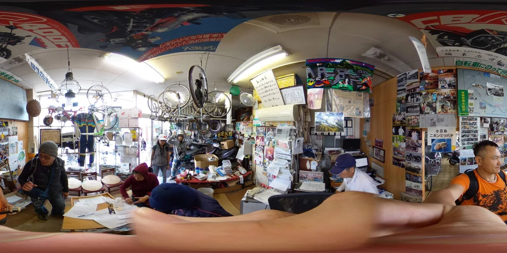
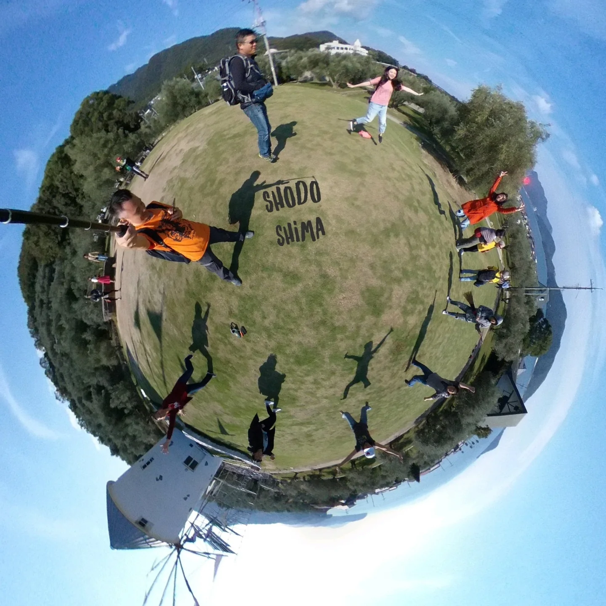
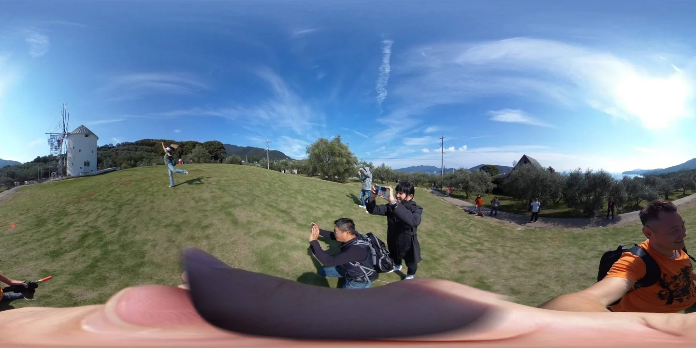
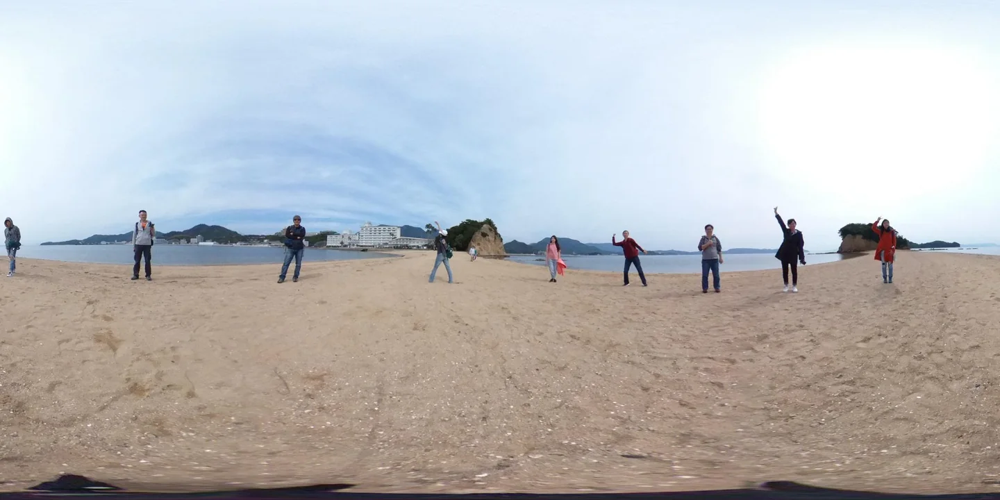
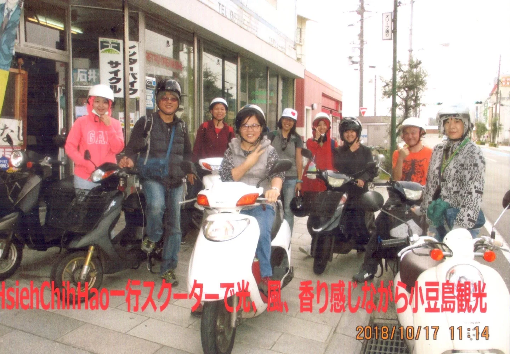
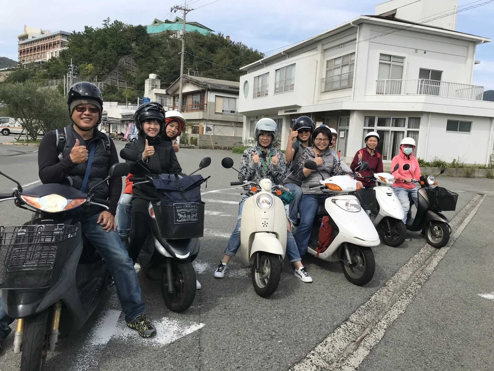

halafish: 這樣都可以曬傷 #小豆島機車短記（在 Shōdoshima,...
這樣都可以曬傷
#小豆島機車短記（在 Shōdoshima, Kagawa）
https://www.instagram.com/p/BpCkTEHFJdnNlRZwoespETKtIblxeYsh4k_wq40/?utm_source=ig_tumblr_share&igshid=ep6sx6wq2jx3
JAPAN TRAVEL JOURNAL
SHODOSHIMA / KAGAWA / JAPAN
這樣都可以曬傷
小豆島機車旅行寫真
有時候旅行最讓人難忘的，不是行程排得多完整，而是沿途那些不經意的風景。
這次留下的是日本香川縣小豆島的旅行影像，以及一段連自己都忍不住想說「這樣都可以曬傷」的旅途記憶。
沒有太多複雜的文字，就用照片收藏這段旅程。
01 / TRAVEL PHOTO DIARY
旅途寫真・風景紀錄
A JOURNEY IN PHOTOGRAPHS
旅行的片段，留給照片慢慢說。

PHOTO 01 / TRAVEL MEMORIES

PHOTO 02 / TRAVEL MEMORIES

PHOTO 03 / TRAVEL MEMORIES

PHOTO 04 / TRAVEL MEMORIES
02 / SHODOSHIMA
小豆島機車短記
小豆島・香川県
SHODOSHIMA, KAGAWA, JAPAN
旅程來到日本四國香川縣的小豆島。
用機車旅行的方式探索島嶼，留下沿途的影像。那些當下看似平凡的片刻，回頭翻照片時，反而最有旅行的味道。

PHOTO 05 / SHODOSHIMA, KAGAWA

PHOTO 06 / SHODOSHIMA, KAGAWA
03 / TRAVEL NOTES
旅行的記憶
旅途中總有一些意料之外的小插曲，也有一些當下沒特別留意，卻在多年後依然記得的畫面。
這樣都可以曬傷。
就當作這趟旅行留下的另一種紀念吧。
照片留下風景，文字留下心情。這篇小豆島旅行短記，也成為個人旅遊紀錄的一部分。
iTigre.com
JAPAN TRAVEL / PHOTO JOURNAL
PERSONAL TRAVEL ARCHIVE